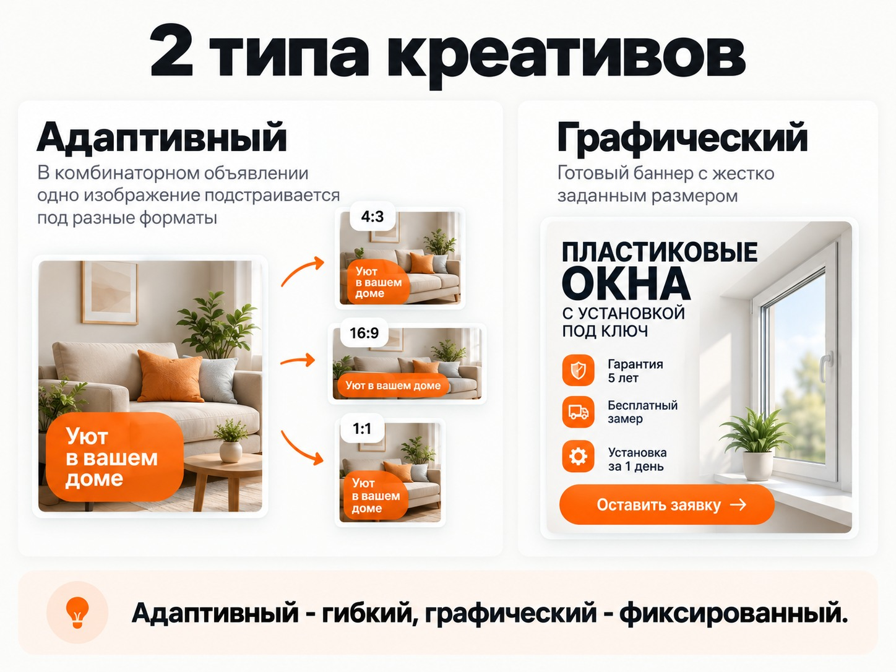
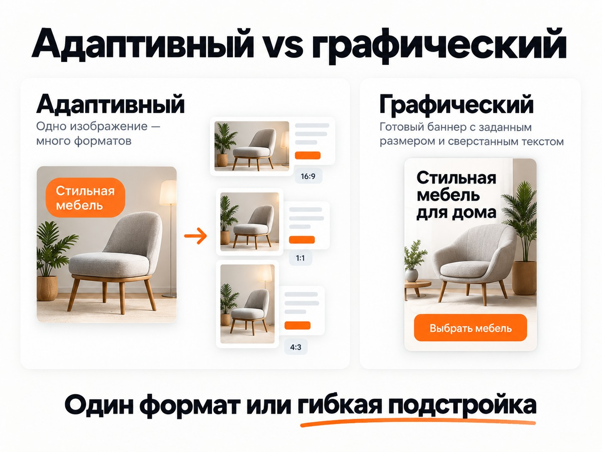
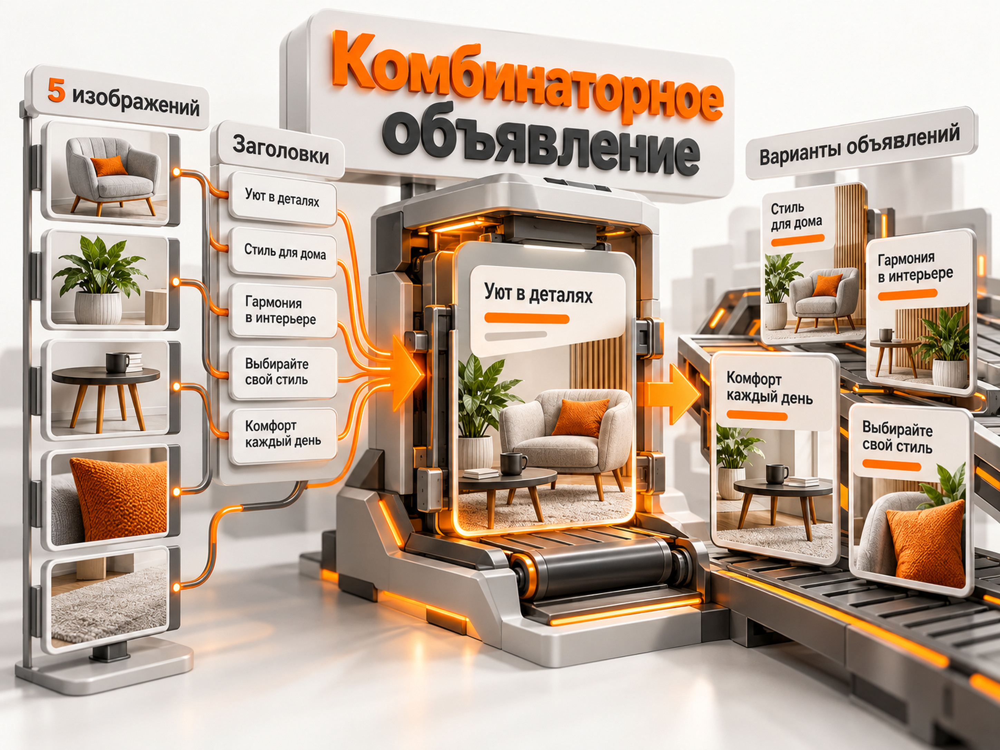
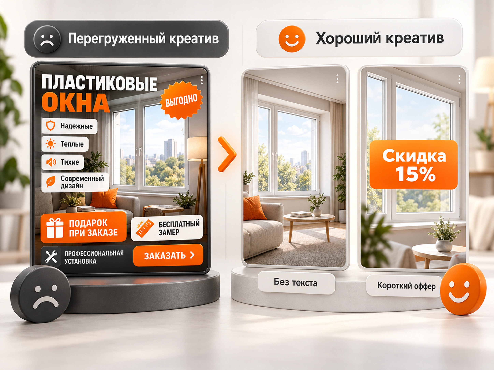
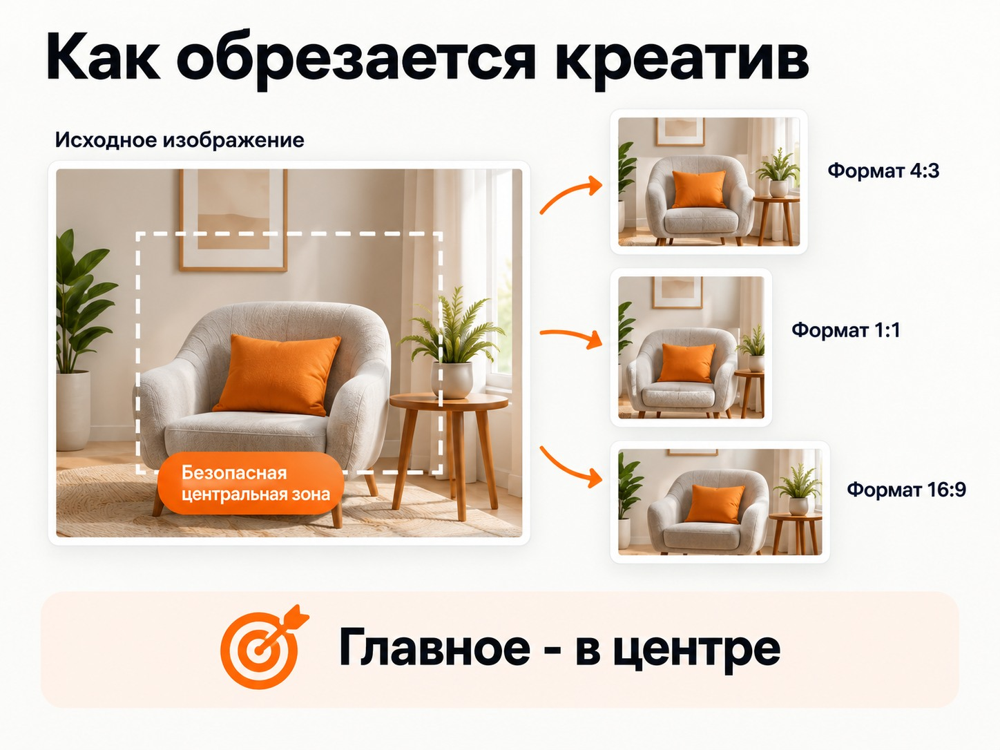
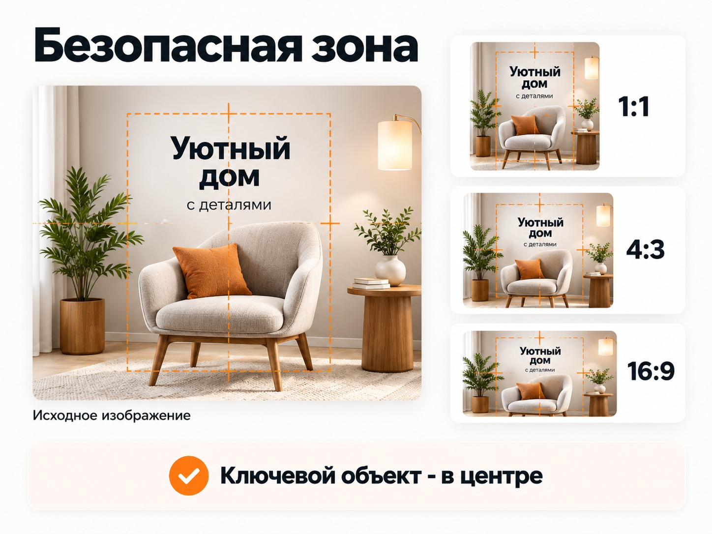
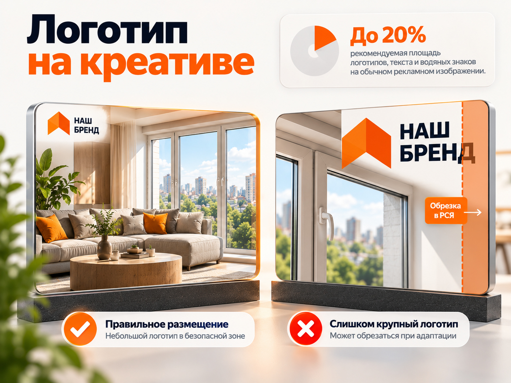
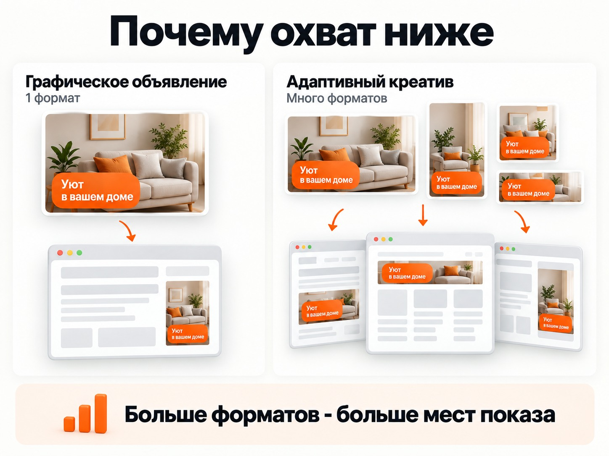

Блог о платном трафике
Креативы Яндекс Директ: требования, размеры и форматы для РСЯ
Для рекламы в РСЯ я рекомендую в первую очередь готовить изображения 4:3 и 16:9. Например, 1600 × 1200 и 1920 × 1080 пикселей. Они подходят для комбинаторных объявлений Яндекс Директа и позволяют охватить разные рекламные блоки. Дополнительно можно использовать квадратные 1:1 и вертикальные 3:4 изображения.
Если нужен готовый баннер с фиксированным дизайном, действуют другие требования. Для графических объявлений используются конкретные размеры рекламных блоков, например 240 × 400, 300 × 250 или 728 × 90 пикселей.
Главное отличие: изображение в комбинаторном объявлении может обрезаться и дополняться текстом объявления, а графический баннер создаётся как законченный макет.
С 30 июня 2026 года новые текстово-графические объявления в Единой перфоманс-кампании больше не создаются. Для этих задач Яндекс предлагает комбинаторные объявления, а с 14 июля началось обновление существующих текстово-графических объявлений.
Подробнее об особенностях размещения я рассказал в статье «Что такое РСЯ в Яндекс Директ».
Два типа креативов для РСЯ
Креативы для РСЯ можно разделить на два основных типа: изображения для комбинаторных объявлений и готовые графические баннеры. Их нельзя готовить по одинаковым правилам, поскольку механика отображения отличается.
| Параметр | Изображение в комбинаторном объявлении | Графическое объявление |
|---|---|---|
| Размер | Адаптивный | Фиксированный |
| Основные пропорции | 4:3, 16:9, 1:1, 3:4 | Например, 240 × 400, 300 × 250, 728 × 90 |
| Обрезка | Возможна | Нет |
| Заголовок и текст | Добавляются системой отдельно | Обычно уже встроены в баннер |
| Текст внутри изображения | Лучше использовать минимум | Можно использовать больше |
| Места показа | Адаптация под разные блоки | Зависит от подготовленных размеров |
| Когда использовать | Основной вариант для обычной РСЯ | Когда нужен полностью готовый баннер |
Для большинства performance-кампаний я использую адаптивные изображения. Они дают системе больше возможностей подстраивать рекламное сообщение под разные площадки.
Графические объявления позволяют контролировать дизайн целиком, но для широкого охвата потребуется подготовить несколько отдельных размеров.


Размеры креативов для адаптивных объявлений
В Единой перфоманс-кампании Яндекс принимает изображения JPG, PNG и GIF. При загрузке GIF используется только первый кадр. Максимальный размер файла составляет 10 МБ.
Основные технические ограничения:
- Для стандартных изображений с пропорциями от 1:1 до 3:4 или 4:3 - от 450 до 5000 пикселей по каждой стороне.
- Для широкоформатных изображений 16:9 - от 1080 × 607 до 5000 × 2812 пикселей.
- В Мастере кампаний предельный вес изображения составляет 4 МБ.
- Яндекс рекомендует использовать качественные изображения с разрешением порядка 1080-5000 пикселей.
Таблица выбора форматов креативов
Следующие размеры являются удобными рабочими примерами, а не обязательными значениями разрешения.
| Формат | Пример размера | Для каких задач |
|---|---|---|
| 4:3 | 1600 × 1200 px | Основной универсальный вариант для РСЯ |
| 16:9 | 1920 × 1080 px | Широкие рекламные блоки, горизонтальные композиции |
| 1:1 | 1080 × 1080 px | Квадратные рекламные блоки, компактные изображения товаров |
| 3:4 | 1200 × 1600 px | Вертикальные композиции и соответствующие места показа |
| 240 × 400 | 480 × 800 px | Фиксированный вертикальный графический баннер |
| 300 × 250 | 600 × 500 px | Фиксированный прямоугольный графический баннер |
| 728 × 90 | 1456 × 180 px | Фиксированный горизонтальный графический баннер |
Размеры в последних трёх строках приведены с двукратным увеличением для экранов высокой плотности пикселей. Для этих баннеров действуют отдельные ограничения по весу файлов.
Если вы только начинаете запускать РСЯ, я бы не советовал сразу создавать изображения во всех возможных пропорциях. Начните с 4:3 и 16:9, проверьте, как объявления выглядят на разных площадках, и при необходимости добавьте другие варианты.
Какие форматы нужны для комбинаторного объявления
Для комбинаторного объявления в Яндекс Директе обычно стоит подготовить изображения 4:3 и 16:9. Если изображение только одно, я бы начал с 4:3.
В комбинаторное объявление можно загрузить до пяти изображений. Кроме них рекламодатель добавляет варианты заголовков, текстов и другие предусмотренные форматом элементы. Директ составляет из этих материалов разные сочетания для показа.

Это означает, что загруженная картинка не всегда будет отображаться отдельно и именно в том виде, в котором её подготовил дизайнер.
Например, рекламируется установка окон. В одно объявление можно добавить несколько действительно разных изображений: установленное окно в интерьере, процесс монтажа, крупный план оконного профиля и готовый результат работы.
Система сможет сочетать эти изображения с рекламными заголовками и текстами. Поэтому креатив должен быть понятен даже без собственной длинной надписи.
Я бы не заполнял все пять доступных мест почти одинаковыми картинками. Лучше предложить несколько разных визуальных идей. Это даст возможность сравнивать подходы, а не незначительные изменения одного макета.
При загрузке также необходимо проверить предварительный просмотр и смарт-центры каждого изображения.
Почему на адаптивном креативе лучше почти не использовать текст
В адаптивном объявлении вы не контролируете финальный рекламный блок целиком.
Яндекс подбирает подходящее размещение, изменяет отображаемую область изображения и добавляет другие элементы объявления: заголовок, текст, кнопку и дополнительную информацию.
Поэтому я обычно не пытаюсь переносить весь рекламный оффер на картинку.
Плохой вариант:
«Установка пластиковых окон под ключ со скидкой 20%. Бесплатный замер. Гарантия 5 лет».
На большом макете такой текст может выглядеть нормально, но в небольшом рекламном блоке он превратится в мелкую нечитаемую надпись.
Лучше показать сами окна, интерьер с установленными окнами или результат работы.
Если текст действительно необходим, можно оставить короткую крупную фразу:
- «Окна за 7 дней».
- «Бесплатный замер».
Разумеется, конкретные сроки, скидки и условия должны соответствовать реальному предложению.
По правилам Яндекса текст, логотипы и водяные знаки на обычном рекламном изображении рекомендуется ограничивать примерно 20% площади. Это рекомендация, а не обязательное требование заполнять эти 20%. Для отдельных типов изображений и графических объявлений предусмотрены исключения.
На практике для адаптивных креативов я предпочитаю использовать текста ещё меньше.
Как выглядит хороший и плохой креатив для РСЯ
Хороший креатив для РСЯ должен быстро показывать, что рекламируется, и оставаться понятным даже при уменьшении. Поэтому качество изображения и правильная композиция важнее количества рекламных надписей.
Возьмём ту же рекламу установки окон.
Неудачный вариант: изображение разделено на множество мелких блоков. В одном углу скидка, в другом телефон, снизу перечислены преимущества, а самих окон почти не видно.
Даже если картинка проходит модерацию, пользователь может не успеть понять предложение.
Более удачный вариант: крупное качественное изображение установленного окна в интерьере. Главный объект занимает значительную часть кадра, нет лишних декоративных элементов, важные детали хорошо различимы.

Заголовок и рекламное предложение добавляются средствами Директа.
Перед загрузкой я рекомендую проверить макет в уменьшенном размере. Если приходится приближать изображение, чтобы разобрать текст или понять сюжет, скорее всего, креатив перегружен.
Отдельно проверяйте, не теряется ли смысл при переходе от горизонтальных к квадратным и вертикальным форматам.
Учитывайте обрезку изображения
При показе адаптивного объявления Яндекс может изменять видимую область картинки.
Для этого используются смарт-центры. Система определяет значимую часть изображения и старается сохранить её при адаптации к рекламному блоку.
В Единой перфоманс-кампании можно вручную настраивать значимые области изображения отдельно для форматов 1:1, 4:3, 3:4 и 16:9.
Поэтому главный товар, лицо человека, важную деталь или короткую надпись не стоит размещать вплотную к краю.
Если объект находится в углу, при изменении пропорций он может частично исчезнуть. Для рекламного изображения это особенно критично, когда отрезается товар или часть основной надписи.
Простой практический тест: попробуйте мысленно или в редакторе обрезать по 15-20% изображения с разных сторон.
Это не официальный размер безопасной зоны Яндекса, а способ проверить устойчивость композиции.
Если после такой обрезки теряется главный смысл, макет лучше доработать.


Можно ли размещать логотип на изображении для Яндекс Директа
Да, размещать логотип компании на изображении в Яндекс Директе разрешено. Но важно учитывать площадь, которую он занимает, и возможную обрезку адаптивного креатива.
Яндекс рекомендует, чтобы логотипы, текст и водяные знаки в совокупности занимали не более 20% изображения. Для логотипов на товарной упаковке, изображений графических объявлений и некоторых других случаев есть исключения.

Я бы придерживался нескольких принципов:
- Не делать логотип основным объектом вместо рекламируемого продукта.
- Не размещать его вплотную к краю изображения.
- Проверять, сохраняется ли логотип при изменении пропорций.
- Не дублировать название бренда несколькими надписями.
- Оставлять достаточно места для главного рекламного объекта.
Для комбинаторного объявления логотип не обязан быть встроен непосредственно в изображение. Если формат позволяет добавить логотип отдельным элементом, это обычно удобнее.
А для фиксированного графического баннера брендирование можно сразу предусмотреть в общей композиции. Такой баннер не будет автоматически обрезаться, как адаптивное изображение.
Требования Яндекса к содержанию изображения
Правильно выбранного размера недостаточно. Креатив должен соответствовать тексту объявления и содержанию страницы, на которую ведёт реклама.
Изображение должно быть качественным, чётким, без заметных артефактов сжатия и с непрозрачным фоном.
Яндекс запрещает использовать на рекламных изображениях:
- QR-коды;
- элементы, имитирующие интерфейс Яндекса;
- вводящие пользователя в заблуждение кнопки и элементы интерфейса;
- продукцию и символику конкурентов для сравнения товаров;
- изображения товаров и услуг, реклама которых запрещена или ограничена действующими правилами;
- шокирующий и другой запрещённый рекламными правилами контент.
Для отдельных тематик также действуют дополнительные требования к предупреждениям, возрастной маркировке и обязательной юридической информации.
Отдельно проверяйте достоверность рекламных утверждений. Если на креативе указана скидка, срок изготовления или конкретное преимущество, предложение должно подтверждаться содержанием посадочной страницы.
Каким должен быть хороший креатив для РСЯ
Технически подходящая картинка ещё не означает хорошую рекламу.
В РСЯ человек обычно не вводит в этот момент конкретный коммерческий запрос. Объявление конкурирует за внимание с содержанием сайта или приложения.
Поэтому креатив должен быстро отвечать хотя бы на один вопрос: что здесь рекламируется и почему это может быть интересно пользователю.
Один креатив - одна основная мысль
Не нужно одновременно размещать на изображении название компании, пять преимуществ, скидку, телефон, адрес, сроки, гарантию и список услуг.
Чем меньше рекламный блок, тем хуже будут читаться все эти элементы.
Лучше подготовить несколько разных креативов с разными идеями, а затем сравнить их эффективность.
Показывайте сам продукт или результат
Если товар можно показать, обычно лучше показать его.
Если продвигается услуга, можно визуализировать результат работы, ситуацию использования или понятный объект, связанный с предложением.
Абстрактная картинка часто требует от пользователя дополнительного времени, чтобы понять, что именно ему рекламируют.
Не делайте креатив ради максимального CTR
Я бы не оценивал изображение только по кликабельности.
Картинка может привлекать внимание, получать много дешёвых переходов и при этом приводить людей, которым предложение на самом деле не нужно.
Креатив необходимо оценивать вместе с конверсиями, стоимостью обращения и качеством заявок.
Подробнее об этом в статье «Как оценить эффективность Яндекс Директа».
Что такое графическое объявление
Графическое объявление работает иначе. Здесь рекламодатель загружает полностью готовый баннер определённого размера.
Например, баннер для блока 240 × 400 пикселей нельзя автоматически превратить в широкий баннер 728 × 90 без подготовки отдельного креатива.
Поэтому внутри графического объявления можно заранее разместить:
- изображение товара или услуги;
- рекламный заголовок;
- предложение или цену;
- несколько коротких преимуществ;
- кнопку или призыв к действию;
- необходимую юридическую информацию.
Такой креатив не будет неожиданно обрезан по краям.
Но остаётся другое ограничение: графические баннеры нередко показываются в небольших рекламных блоках. Поэтому перегружать их мелким текстом тоже не стоит.
Размеры графических объявлений Яндекс Директа
Для готовых статичных графических объявлений Яндекс принимает файлы JPG, PNG и GIF. Максимальный вес файла составляет 512 КБ.
Для экранов с высокой плотностью пикселей изображение можно подготовить с двукратным или трёхкратным увеличением относительно рекламного блока.
| Размер рекламного блока | Рекомендуемые размеры файла |
|---|---|
| 240 × 400 | 480 × 800 или 720 × 1200 |
| 300 × 250 | 600 × 500 или 900 × 750 |
| 300 × 500 | 600 × 1000 или 900 × 1500 |
| 300 × 600 | 600 × 1200 или 900 × 1800 |
| 320 × 50 | 640 × 100 или 960 × 150 |
| 320 × 100 | 640 × 200 или 960 × 300 |
| 320 × 480 | 640 × 960 или 960 × 1440 |
| 336 × 280 | 672 × 560 или 1008 × 840 |
| 480 × 320 | 960 × 640 или 1440 × 960 |
| 728 × 90 | 1456 × 180 или 2184 × 270 |
| 970 × 250 | 1940 × 500 или 2910 × 750 |
Если вы хотите подготовить только несколько основных вариантов, Яндекс рекомендует начать с блоков 240 × 400, 300 × 250 и 728 × 90.
Для HTML5-баннеров дополнительно доступны другие размеры, например 160 × 600, 240 × 600, 300 × 300 и 1000 × 120. У HTML5-креативов отдельные технические требования.
Важно также не путать графические объявления для РСЯ с отдельным форматом «Баннер на поиске». У поискового баннера собственные условия размещения и ограничения. Подробнее о них можно прочитать в статье «Баннер на поиске Яндекс Директ».
Почему я редко делаю ставку на графические объявления
У фиксированного баннера есть очевидный плюс: дизайнер полностью контролирует результат.
Если подготовлен баннер 240 × 400, заранее понятно, где будут находиться заголовок, картинка, кнопка и остальные элементы.
Но эта особенность одновременно становится ограничением.
Яндексу необходимо найти рекламный блок, подходящий под заданный формат. Если подготовлен только один размер, количество потенциальных размещений ограничено.
Поэтому сам Яндекс рекомендует добавлять несколько размеров, чтобы увеличивать доступный охват.
В моей практике графические объявления часто получают значительно меньше трафика, а стоимость клика или целевого действия оказывается выше, чем у обычных адаптивных вариантов.
Это не означает, что графические объявления всегда работают плохо. Их можно тестировать как отдельную гипотезу.
Но я бы не выбирал их основным форматом только потому, что дизайнер может сделать красивый полноценный баннер.
Для большинства задач РСЯ сначала имеет смысл дать системе возможность адаптировать объявление под разные площадки.

Что выбрать для рекламы в РСЯ
Для обычной performance-рекламы я бы начинал с комбинаторных объявлений и адаптивных изображений 4:3 и 16:9.
Базовый порядок подготовки:
- Создать комбинаторное объявление в Единой перфоманс-кампании.
- Подготовить качественные изображения 4:3 и 16:9.
- Разместить главный объект так, чтобы он сохранялся при возможной обрезке.
- Не переносить весь текст рекламного объявления на изображение.
- Если короткая надпись нужна, сделать её крупной и читаемой.
- Проверить предварительный просмотр и смарт-центры.
- Добавить несколько действительно разных изображений, а не почти одинаковые варианты.
- После запуска оценивать результаты по заявкам, их стоимости и качеству, а CTR использовать как дополнительный показатель.
Фиксированные графические объявления я бы добавлял отдельным тестом, когда требуется полностью контролировать внешний вид рекламного баннера.
При этом сами креативы являются только одной частью рекламной кампании. Даже хорошее изображение не исправит нецелевую аудиторию, слабое предложение, ошибки аналитики или неудачную посадочную страницу.
Я занимаюсь настройкой и ведением Яндекс Директа, включая работу с объявлениями, аналитикой и оптимизацией трафика. Стоимость моих услуг начинается от 30 000 ₽ в месяц, рекламный бюджет оплачивается отдельно.
Коротко
Для большинства рекламных кампаний в РСЯ я рекомендую начинать с изображений 4:3 и 16:9. Рабочие размеры, например, 1600 × 1200 и 1920 × 1080 пикселей.
Изображение для комбинаторного объявления должно оставаться понятным при уменьшении и возможной обрезке. Поэтому главный объект лучше располагать ближе к центру и не перегружать картинку рекламным текстом.
Если нужен баннер с полностью фиксированным дизайном, используйте графические объявления. Для них подготавливаются отдельные размеры, например 240 × 400, 300 × 250 и 728 × 90 пикселей.
Но независимо от выбранного формата оценивать креатив стоит не только по тому, насколько красиво он выглядит или сколько кликов получает, а по его вкладу в реальные обращения и продажи.